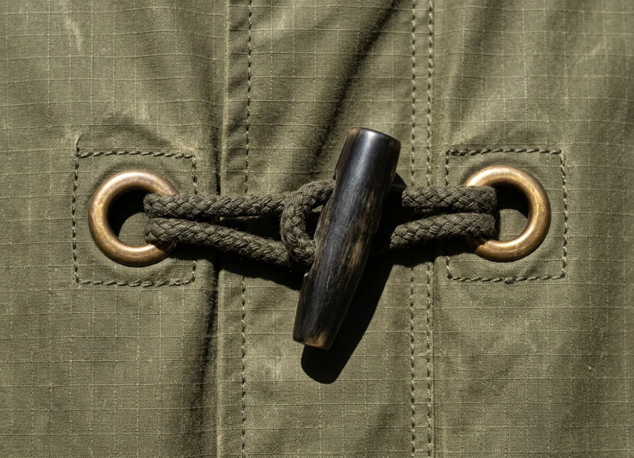

Gear & Technical Specifications
Stationary field shelters designed to withstand sustained gale-force coastal squalls while eliminating the acoustic rustle that alerts wildlife. Hand-assembled in North Norfolk.
Three Core Shelter Systems
Choose between our standard Dundee 180 gsm Scottish dry-wax ripstop (optimised for packing into day rucksacks) and our heavy-duty 210 gsm marine ripstop (for semi-permanent seasonal installations overlooking saltmarsh gullies).
| Model & Role | Total Packed Weight | Pack Dimensions | Hydrostatic Head | Footprint / Span | Hardware Compliment | Direct Price |
|---|---|---|---|---|---|---|
|
The Reedbed Single-Pole Hide Solitary observation pyramid |
890 g | 38 × 11 cm | 8,000 mm | 145 × 120 cm (118 cm apex) | 2 × Easton Carbon, 4 × 7075 Pegs | £245 |
|
Moth-Trap Rain Canopy Mercury-vapour light shield |
520 g | 24 × 9 cm | 8,000 mm | 160 × 160 cm (Square eave) | 4 × Marine Brass Rings, Guy Cords | £165 |
|
Closed-Cell Bog Kneeler Thermal marsh kneeling pad |
310 g | 36 × 26 × 3 cm | 8,000 mm | 36 × 26 cm surface area | Brass Bridle Stud, Webbing Handle | £48 |
* All weights include factory-fitted guy lines, toggles, and dedicated stuff sacks. Shipped in unbleached card boxes from Wells-next-the-Sea.

Turned horn toggles instead of noisy plastic clips
In sub-zero temperatures, plastic side-release buckles freeze brittle and snap under thumb pressure, while hook-and-loop velcro tears with a ripping frequency that carries 400 metres across quiet saltmarshes.
Every PegLow hide replaces noisy fasteners with hand-turned water-buffalo horn toggles sourced from Scottish hornworks. They will not freeze, do not degrade under UV light, and operate smoothly even when your hands are numb from four hours in an unheated reedbed.
All grommets and tripod port rings are stamped from solid marine-grade naval brass. They will never rust when exposed to salt spray off the North Sea, developing a dark verdigris patina that blends naturally into dead winter grasses.
Why Scottish cotton outlasts coated nylon in coastal gusts
Mainstream outdoor kit is designed around laboratory treadmill tests. Below is an honest comparison of how different shelter membranes behave in real coastal Norfolk weather.
PegLow Dry-Waxed Cotton
180 gsm long-staple ripstop with Dundee beeswax formulation.
- Acoustic Noise: < 14 dB (Soft rustle)
- Condensation: Zero internal drip
- Wind Drape: Heavy, stable drape
- Puncture Resistance: Ripstop halts thorn tears
- Field Maintenance: Cold rub with wax bar
PU-Coated Silnylon
Standard ultralight backpacking fabric with plastic film.
- Acoustic Noise: 64–72 dB (Metallic snap)
- Condensation: Heavy droplets onto gear
- Wind Drape: Drum-like resonance
- Puncture Resistance: Easily shredded by gorse
- Field Maintenance: Glue patch required
Industrial PVC Tarp
Heavy agricultural sheeting used in rough farm work.
- Acoustic Noise: 58 dB (Rumbling thud)
- Condensation: Severe sweating inside
- Wind Drape: Stiff, catches gusts
- Puncture Resistance: High, but 2.4 kg weight
- Field Maintenance: Duct tape only
Request a swatch cuttings packet by first class post
Before investing in a £245 storm hide, feel the waxed Dundee ripstop in your own hands. We include sample cuttings of both 180 gsm and 210 gsm grades, a turned horn toggle, and detailed re-proofing guidance.